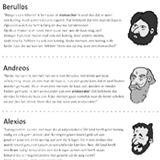
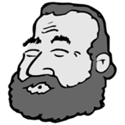
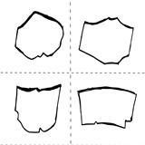
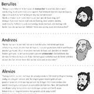
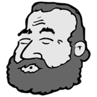
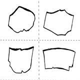

Rollenspel Griekse bestuursvormen
- Onderwerp:
- De Griekse bestuursvormen
- Niveau:
- Eerste klas H/V
- Werkvorm:
- Rollenspel
- Auteur(s):
- Frank Menzel (tekst) en Hayo van Reek (tekeningen)
Dit is een rollenspel over de verschillende bestuursvormen van de Griekse Poleis. Het verhaal speelt zich af in de Atheense volksvergadering, waarin gepraat wordt over wat de beste bestuursvorm is. De bestuursvormen die aan bod komen zijn de monarchie, aristocratie, tirannie en de democratie. De opdracht is in pakweg tien minuten uit te voeren.
Download (1MB)   
  